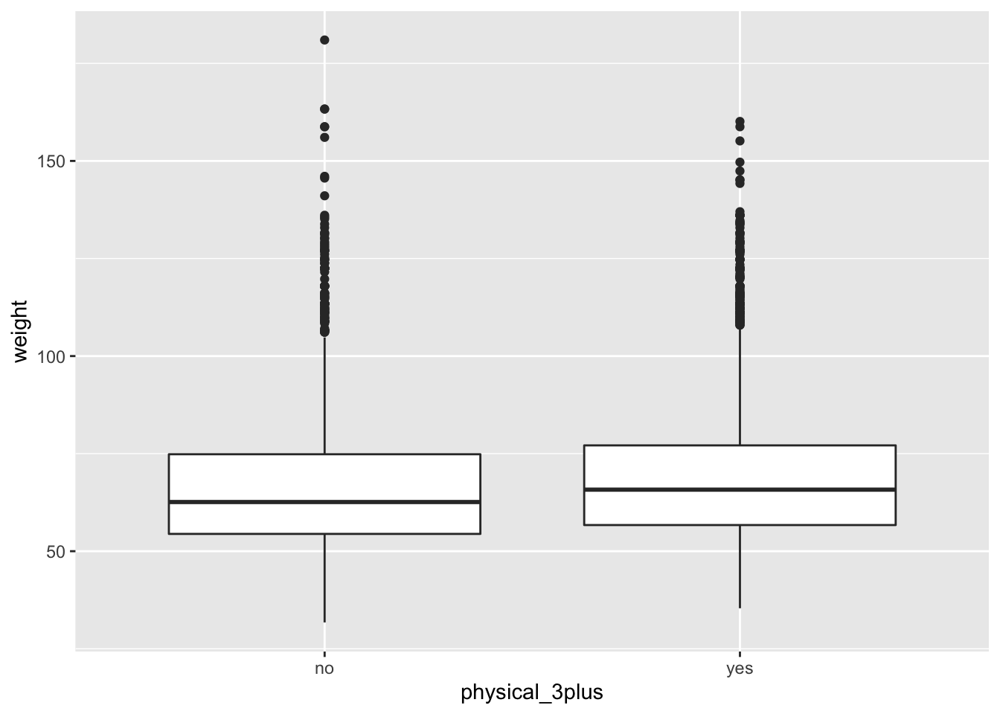

Inference on Means
Conditions for Inference, or, a Normality Check
As seen on the bottom of OpenIntro Page 251 two conditions are required for making inference on numerical variables:
Independence: The sample observations must be independent. The most common way to satisfy this condition is when the sample is a simple random sample from the population.
Normality: When a sample is small, we also require that the sample observations come from a normally distributed population. We can relax this condition more and more for larger and larger sample sizes. This condition is obviously vague, making it difficult to evaluate, so next we introduce a couple rules of thumb to make checking this condition easier.
\(n < 30:\) If the sample size n is less than 30 and there are no clear outliers in the data, then we typically assume the data come from a normal enough distribution to satisfy the condition.
\(n \geq 30:\) If the sample size n is at least 30 and there are no particularly extreme outliers, then we typically assume adequate normality.
Exercise 3
Are all conditions necessary for inference satisfied for our data?
Consider the structure of the data i.e. The collection of students. In general, are the students independent of one another?
Both the sample size and the distribution of the boxplots would help us verify normality. Compute the sizes of the two groups, (yes/no for the physical_3plus variable) by using the summarise() function. Also recreate the boxplot of physical_3plus and weight from Exercise 2 to check the normality assumption.
To count the group sizes, you first want to group_by the variable physical_3plus, and then count the number of observations, n(), there are in each group.
To make the boxplot, physical_3plus should be along the \(x\)-axis and weight should be along the \(y\)-axis.
yrbss %>%
group_by(physical_3plus) %>%
summarise(count = n())## # A tibble: 2 x 2
## physical_3plus count
## <chr> <int>
## 1 no 2656
## 2 yes 5695ggplot(yrbss, aes(y = weight, x = physical_3plus)) +
geom_boxplot()
Is the normality condition satisfied?
Consider the size of the two groups and whether any outliers are extreme.
Exercise 4
Since the assumptions of independence and normality are both satisfied, we can proceed with making inference, and hence construct confidence intervals or perform a hypothesis test about the weight variable for those who exercise at least three times a week and those who don't.
Let \[\mu_l = \textrm{Average weight of a student who is physically active less than 3 days a week}\] and
\[\mu_m = \textrm{Average weight of a student who is physically active 3 or more days a week}\]
The only question you can answer is whether there is a statistically significant difference between the two average weights. You can't test at the moment how different they are.
Confidence Interval
Next, we will be conducting a hypothesis test, and ultimately a confidence interval, for a difference of two means. Namely, the mean weights in the two groups (those that are active 3+ days a week and the other group that aren't). More details on this can be found on page 267 of the OpenIntro textbook.
In general, we have some sort of \[\textrm{Statistic} \pm \textrm{Percentile of a distribution}*\textrm{Standard Error}\]
More specifically, we have the following: \[(\mu_1 - \mu_2) \pm t^* \times \textrm{SE}\]
So our new statistic is \((\mu_1 - \mu_2)\), the difference in averages between the two groups, our new percentile is \(t^*\), from something called the t-distribution rather than the standard Normal distribution. The standard error \(\textrm{SE}\) now equals
\[\textrm{SE} = \sqrt{\frac{\sigma_1^2}{n_1}+\frac{\sigma_2^2}{n_2}}\]
where \(n_1\), \(n_2\) are the sample sizes of the two groups you're considering and \(\sigma_1^2\), \(\sigma_2^2\) are the variances of the two groups. Putting it all together, our confidence interval for the difference in means between two groups is:
\[(\mu_1 - \mu_2) \pm t^* \times \sqrt{\frac{\sigma_1^2}{n_1}+\frac{\sigma_2^2}{n_2}}\]
We first calculate \((\mu_1 - \mu_2)\), which we will save as obs_diff. This is the difference in the two means of the weights of the two groups of students; one that is active 3+ days a week and the other group that isn't. Namely we are taking group 1 to be "yes" active 3+ days a week and group 2 to be "no" not active 3+ days a week.
yes <- yrbss %>%
filter(physical_3plus == "yes")
no <- yrbss %>%
filter(physical_3plus == "no")
mu1 <- mean(yes$weight)
mu2 <- mean(no$weight)
obs_diff <- (mu1 - mu2)Now recall our calculation from Exercise 3 to get our \(n_1\) and \(n_2\) i.e. the sizes of the two groups, remembering that "yes" means group 1 and "no" means group 2.
yrbss %>%
group_by(physical_3plus) %>%
summarise(count = n())## # A tibble: 2 x 2
## physical_3plus count
## <chr> <int>
## 1 no 2656
## 2 yes 5695n1 <- 5695
n2 <- 2656Next, our \(t^*\) value. As it happens, (due to a rigorously proved and fascinating result in Statistics), for sufficiently large n, the t-distribution tends toward the normal distribution. As in, when your sample size is big enough the t distribution is basically identical to the standard normal distribution. Therefore, since the samples we have are so large, our \(t^*\) value this time is also 1.96 for a 95% confidence interval. Make sure you always check though, because you often will have a smaller sample and therefore your \(t^*\) will be different!
t.star <- 1.96Now we will get the variances of the two groups.
sigma_squared_1 <- var(yes$weight)
sigma_squared_2 <- var(no$weight)Finally, let's put it all together and get our confidence interval!
standard.error <- sqrt((sigma_squared_1/n1) + (sigma_squared_2/n2))
lower.bound <- obs_diff - t.star*standard.error
upper.bound <- obs_diff + t.star*standard.error
c(lower.bound, upper.bound)## [1] 0.7215522 2.3338998Note It is equivalent to slightly re-arrange the above null and alternative hypotheses, that is we consider the difference between two means such that:
\[H_0: \mu_l - \mu_m = 0\]
\[H_1: \mu_l - \mu_m \ne 0\]
Namely there is no difference between the average weights of the two groups of students, or there is a difference in average weights between the two groups. Notice this is just a rearranging of the equation.
Consider whether the interval contains a certain vital number.